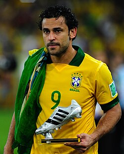
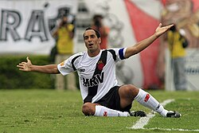
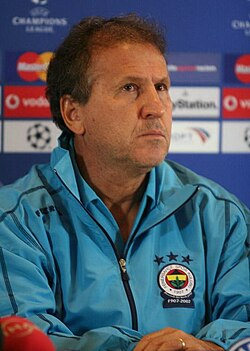
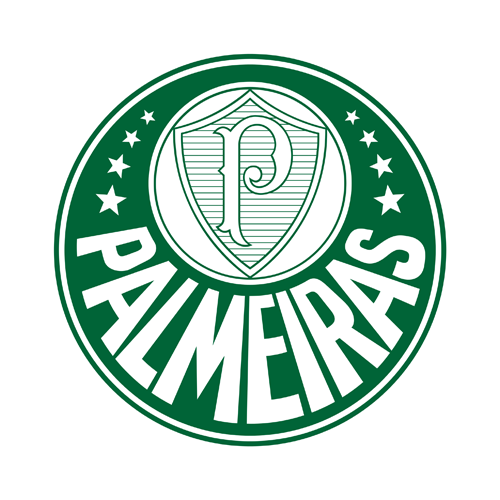
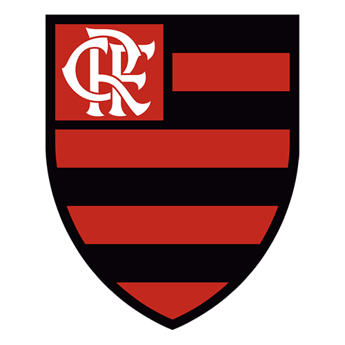
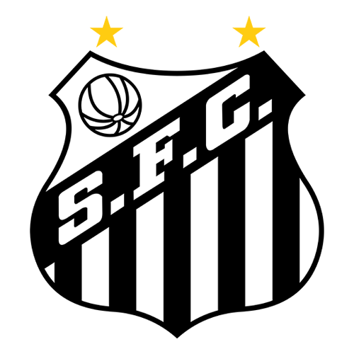
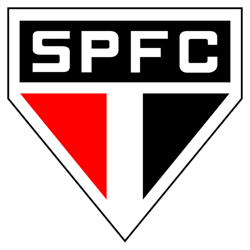

Washington, em 2004
Pelo Athletico-PR, o atacante estabeleceu o recorde de gols em uma única edição do Brasileirão.
Esta é uma fotografia do campeonato ao apito final da rodada 31.
Partidas, classificação e estatísticas da Série A consideram os jogos concluídos até 19 de outubro. Os “próximos jogos” exibem o primeiro compromisso agendado após esse momento.
Os nomes, os gols e as mudanças que fizeram o Brasileirão.
Top 5 da primeira divisão, na contagem histórica consolidada até 2025. Os números não incluem estaduais, Copa do Brasil ou Série B.
190 GOLS

02158 GOLS
154 GOLS

04153 GOLS

05135 GOLS
Os cinco clubes com mais títulos brasileiros da primeira divisão até 2025, incluindo Taça Brasil e Robertão. Clubes empatados dividem a posição.

12 TÍTULOS
ANOS DAS CONQUISTAS1960 · 1967 (Taça Brasil) · 1967 (Robertão) · 1969 · 1972 · 1973 · 1993 · 1994 · 2016 · 2018 · 2022 · 2023

8 TÍTULOS
ANOS DAS CONQUISTAS1980 · 1982 · 1983 · 1992 · 2009 · 2019 · 2020 · 2025

8 TÍTULOS
ANOS DAS CONQUISTAS1961 · 1962 · 1963 · 1964 · 1965 · 1968 · 2002 · 2004
7 TÍTULOS
ANOS DAS CONQUISTAS1990 · 1998 · 1999 · 2005 · 2011 · 2015 · 2017

6 TÍTULOS
ANOS DAS CONQUISTAS1977 · 1986 · 1991 · 2006 · 2007 · 2008
Critério: títulos reconhecidos pela CBF. Em 1967, o Palmeiras venceu dois torneios nacionais. A Copa União de 1987, vencida pelo Flamengo, não entra nesta contagem: a CBF reconhece o Sport como campeão brasileiro daquele ano.
O Brasileirão mudou de nome, tamanho e formato. A disputa que hoje premia a campanha de uma temporada já teve finais e eliminatórias.
O Atlético-MG vence o Torneio dos Campeões, reconhecido pela CBF como Campeonato Brasileiro em 2023.
Um torneio nacional em eliminatórias reúne campeões estaduais. O Bahia conquista a primeira edição, vencendo o Santos na decisão.
O Torneio Roberto Gomes Pedrosa amplia o antigo Rio–São Paulo, com clubes de outros estados. Convive com a Taça Brasil em 1967 e 1968.
O Atlético-MG vence a edição inaugural com esse nome. Nas décadas seguintes, regulamentos e quantidade de participantes variam bastante.
No século XXI, a Série A abandona a final: todos se enfrentam em turno e returno, e o clube com mais pontos é campeão. O Cruzeiro conquista o primeiro título do novo formato.
A competição chega ao tamanho atual. Cada time enfrenta os outros 19 em casa e fora, com três pontos por vitória e um por empate.
O Art. 15 do Regulamento Específico da CBF define sete critérios sucessivos para a classificação final. Esta regra foi aplicada na revisão da tabela deste site após a 31ª rodada.
Abrir o regulamento oficial da CBF ↗A lista continua além dos critérios esportivos mais conhecidos: disciplina e sorteio também fazem parte da ordem oficial. Se três ou mais clubes estiverem empatados, o confronto direto não é considerado.
Pelo Athletico-PR, o atacante estabeleceu o recorde de gols em uma única edição do Brasileirão.
A CBF reconheceu Taça Brasil e Robertão como títulos brasileiros. Essas conquistas integram a história da primeira divisão, ao lado do torneio de 1937, reconhecido em 2023.
Memória da Série A · estatísticas encerradas em 2025. Esta seção é a mesma ao alternar entre as Séries A e B; os dados da temporada acima mantêm seu próprio recorte.
Créditos dos retratos · Wikimedia Commons. Imagens em escala de cinza e reenquadradas.
Roberto Dinamite — International Federation of Football History and Statistics · Public domainFred — Tânia Rêgo/ABr · CC BY 3.0 brRomário — Agência Senado from Brasilia, Brazil · CC BY 2.0Edmundo — Alex Carvalho · CC BY-SA 2.0Zico — Мельников Александр · CC BY-SA 3.0